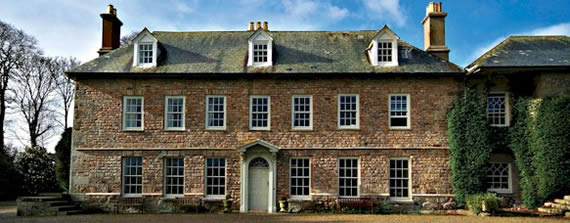

Trereife Gardens
 - Trereife Gardens (01736 362750)
- Trereife Gardens (01736 362750)
Find them on Google Maps
www.trereifepark.co.uk
Trereife is a fine Manor House on the Outskirts of Newlyn and Penzance, Cornwall. The house and grounds offer the perfect facilities for a wedding or any type of event. We have staged Opera, Jazz and Theatre events. It has been used several times as a film location and Bonhams recently held an extremely successful Private Art Exhibition. We also have our own art gallery throughout the season.

Events & Trereife House & Gardens
Fine Food, Art and Craft Fair - Find out more
A celebration of the finest Food, Art and Craft from around West Cornwall. Entertainment and refreshments throughout the weekend.
Hidden Art Design Fair - Find out more
The best of the county's design and craft skills will be on show at the annual Hidden Art event this weekend.
Now in its fourth year, the design fair is a celebration of the quality and diversity of contemporary Cornish design in historic surroundings.
Last year the hugely popular showcase attracted more than 4,000 visitors from across the country.
The Hidden Art Design Fair presents contemporary design from more than 100 designer-makers, offering the public the opportunity to buy a wide range of furniture, accessories, ceramics, glass, lighting, jewellery and textiles direct from the maker.
There is something for all the family, from individual designer-maker stalls filling three marquees to the Hidden Art curated exhibition inside Trereife House
Country Fair - Find out more
Attractions such as a Heavy Horse display, Horse and Hound show, Falconry display, Companion Dog Show, Ferret racing, Bilbo the life saving dog, Vintage vehicle show, Cornish Wrestling, children’s rides, pottery, wood and metal demonstrations, Jazz and acoustic performers